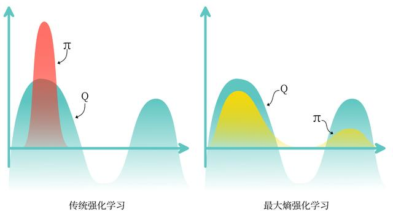

之前的章节提到过同策略算法的采样效率比较低，我们通常更倾向于使用异策略算法。然而，虽然 DDPG 是异策略算法，但是它的训练非常不稳定，收敛性较差，对超参数比较敏感，也难以适应不同的复杂环境。2018 年，一个更加稳定的异策略算法 Soft Actor-Critic（SAC）被提出。SAC 的前身是 Soft Q-learning，它们都属于最大熵强化学习的范畴。Soft Q-learning 不存在一个显式的策略函数，而是使用一个函数的波尔兹曼分布，在连续空间下求解非常麻烦。于是 SAC 提出使用一个 Actor 表示策略函数，从而解决这个问题。目前，在无模型的强化学习算法中，SAC 是一个非常高效的算法，它学习一个随机性策略，在不少标准环境中取得了领先的成绩。
熵（entropy）表示对一个随机变量的随机程度的度量。具体而言，如果是一个随机变量，且它的概率密度函数为，那么它的熵就被定义为
H(X)=Ex∼p[−logp(x)]=−∫p(x)logp(x)dx
在强化学习中，我们可以使用H(π(⋅∣s))来表示策略在状态下的随机程度。
最大熵强化学习（maximum entropy RL）的思想就是除了要最大化累积奖励，还要使得策略更加随机。如此，强化学习的目标中就加入了一项熵的正则项，定义为
π∗=πargmaxEπ[t∑rt(st,at)+αH(π(⋅∣st))]
其中，α是一个正则化的系数，用来控制熵的重要程度。
熵正则化增加了强化学习算法的探索程度，越大，探索性就越强，有助于加速后续的策略学习，并减少策略陷入较差的局部最优的可能性。传统强化学习和最大熵强化学习的区别如下图所示。

Soft策略迭代
在最大熵强化学习框架中，由于目标函数发生了变化，其他的一些定义也有相应的变化。首先，我们看一下 Soft 贝尔曼方程：
Q(st,at)=r(st,at)+γEst+1[V(st+1)]
其中，状态价值函数被写为
V(st)=Eat∼π[Q(st,at)−αlogπ(at∣st)]=Eat∼π[Q(st,at)]+H(π(⋅∣st))
于是，根据该 Soft 贝尔曼方程，在有限的状态和动作空间情况下，Soft 策略评估可以收敛到策略的 Soft 函数。然后，根据如下 Soft 策略提升公式可以改进策略：
πnew=π′argminDKL(π′(⋅∣s),Zπold(s,⋅)exp(α1Qπold(s,⋅)))
重复交替使用 Soft 策略评估和 Soft 策略提升，最终策略可以收敛到最大熵强化学习目标中的最优策略。但该 Soft 策略迭代方法只适用于表格型（tabular）设置的情况，即状态空间和动作空间是有限的情况。在连续空间下，我们需要通过参数化函数和策略来近似这样的迭代。
SAC
在 SAC 算法中，我们为两个动作价值函数Q（参数分别为ω1和ω2）和一个策略函数π（参数为θ）建模。基于 Double DQN 的思想，SAC 使用两个Q网络，但每次用网络时会挑选一个值小的Q网络，从而缓解Q值过高估计的问题。任意一个Q函数的损失函数为：
LQ(ω)=E[21(Qω(st,at)−(rt+γ(j=1,2minQωj−(st+1,at+1)−αlogπ(at+1∣st+1))))2]
因为 SAC 是一种异策略算法。为了让训练更加稳定，这里使用了目标Q网络Qω−，同样是两个目标Q网络，与两个Q网络一一对应。SAC 中目标Q网络的更新方式与 DDPG 中的更新方式一样。
策略π的损失函数由 KL 散度得到，化简后为：
Lπ(θ)=E[αlog(πθ(at∣st))−Qω(st,at)]
可以理解为最大化函数V，因为有V(st)=E[Q(st,at)−αlogπθ(at∣st)]。
对连续动作空间的环境，SAC 算法的策略输出高斯分布的均值和标准差，但是根据高斯分布来采样动作的过程是不可导的。因此，我们需要用到重参数化技巧。重参数化的做法是先从一个单位高斯分布N采样，再把采样值乘以标准差后加上均值。这样就可以认为是从策略高斯分布采样，并且这样对于策略函数是可导的。
自动调整熵正则项
在 SAC 算法中，如何选择熵正则项的系数非常重要。在不同的状态下需要不同大小的熵：在最优动作不确定的某个状态下，熵的取值应该大一点；而在某个最优动作比较确定的状态下，熵的取值可以小一点。为了自动调整熵正则项，SAC 将强化学习的目标改写为一个带约束的优化问题：
πmaxEπ[t∑r(st,at)]s.t.E[−logπ(at∣st)]≥H0
也就是最大化期望回报，同时约束熵的均值大于H0。通过一些数学技巧化简后，得到的损失函数：
L(α)=E[−αlogπ(at∣st)−αH0]
即当策略的熵低于目标值H0时，训练目标L(α)会使α的值增大，进而在上述最小化损失函数Lπ(θ)的过程中增加了策略熵对应项的重要性；而当策略的熵高于目标值H0时，训练目标L(α)会使α的值减小，进而使得策略训练时更专注于价值提升。
至此，我们介绍完了 SAC 算法的整体思想，它的具体算法流程如下：
- 用随机的网络参数 ω1,ω2 和 θ 分别初始化 Critic 网络 Qω1(s,a), Qω2(s,a) 和 Actor 网络 πθ(s)
- 复制相同的参数 ω1−,ω2− 为 ω1,ω2，分别初始化目标网络 Qω1− 和 Qω2−
- 初始化经验回放池 R
- for 序列 e=1→E do
- 获取环境初始状态 s1
- for 时间步 t=1→T do
- 根据当前策略随机选择动作 at←πθ(st)
- 执行动作 at，获得奖励 rt，环境状态变为 st+1
- 将 (st,at,rt,st+1) 存入回放池 R
- for 训练轮数 k=1→K do
- 从 R 中采样 N 个元组 {(si,ai,ri,si+1)}i=1,…,N
- 对每个元组，用目标网络计算 yi：
yi=ri+γminj=1,2Qωj−(si+1,ai+1)−αlogπθ(ai+1∣si+1)
其中 ai+1∼πθ(⋅∣si+1)
- 对两个 Critic 网络都进行如下更新，最小化损失函数：L=N1∑i=1N(yi−Qωj(si,ai))2
- 用重参数化技巧采样 a~i，然后用以下损失函数更新当前 Actor 网络：
Lπ(θ)=N1i=1∑N(αlogπθ(a~i∣si)−j=1,2minQωj(si,a~i))
- 更新熵正则项的系数 α
- 更新目标网络：
ω1−←τω1+(1−τ)ω1−
ω2−←τω2+(1−τ)ω2−
- end for
- end for
- end for